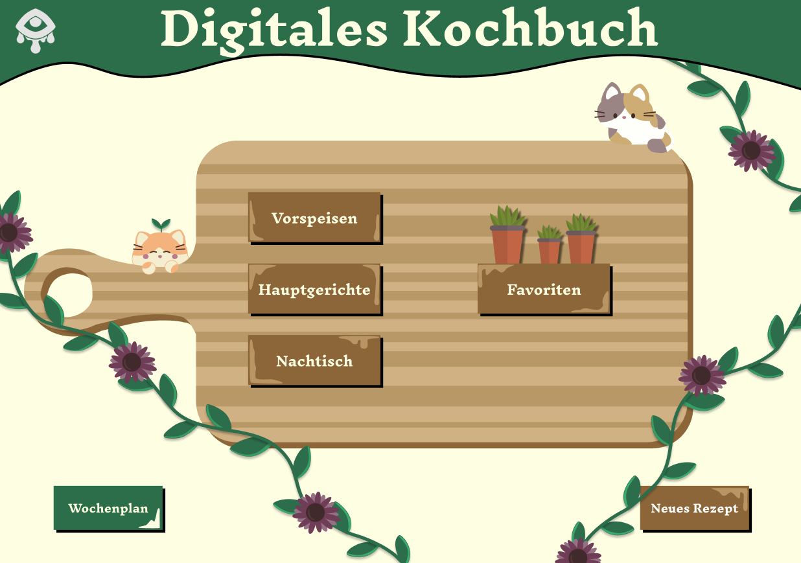

Digitales Kochbuch
Zur Organisation unserer Rezepte habe ich ein digitales Kochbuch
entwickelt.
Das Kochbuch kategorisiert die Rezepte nach unseren Wünschen, und
unsere Favoriten sind nur einen Klick entfernt.
Die Startseite besteht zum größten Teil aus SVGs und kann nach
Belieben animiert werden.